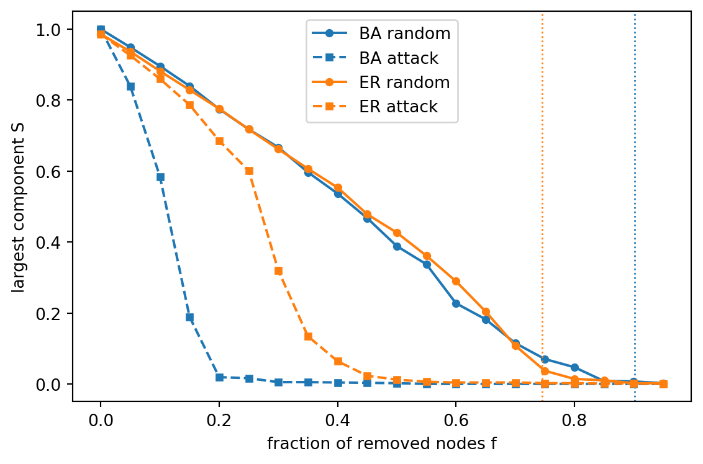

BA: <k> = 3.99, kappa0 = 11.13, predicted f_c (random) = 0.90
ER: <k> = 3.99, kappa0 = 4.92, predicted f_c (random) = 0.75
Module 5: Complex Networks
How much of a network can you remove before it falls apart? You measure the answer with the giant component: the largest connected component, when its size is a finite fraction of \(N\). Let \(S(f)\) be the fraction of the original nodes that stay in the largest component after you remove a fraction \(f\) of the nodes. Removing nodes and asking whether a giant component survives is a site percolation problem (Callaway et al. 2000; Newman 2003, sec. 8.1).
Consider a random graph with a given degree distribution \(p_k\) and no other structure (the configuration model). Molloy and Reed proved that, as \(N \to \infty\), a giant component exists almost surely when
\[ \sum_k k(k-2)\, p_k > 0 \quad \Longleftrightarrow \quad \kappa \equiv \frac{\langle k^2 \rangle}{\langle k \rangle} > 2, \]
and does not exist when the sum is negative (Molloy and Reed 1995). The intuition: follow a random edge to a node. That node has on average \(\kappa - 1\) further edges. The branching process started this way keeps growing when \(\kappa - 1 > 1\).
Remove each node independently with probability \(f\). Cohen et al. applied the criterion to the diluted graph and found the critical fraction (Cohen et al. 2000)
\[ f_c = 1 - \frac{1}{\kappa_0 - 1}, \qquad \kappa_0 = \frac{\langle k^2 \rangle}{\langle k \rangle} \text{ of the intact network.} \]
Now remove the nodes with the highest degree first. Albert, Jeong and Barabási showed in simulations that scale-free networks are tolerant to random failure but fragile under this attack: removing a few hubs breaks them apart much faster than an Erdős-Rényi graph with the same \(N\) and \(E\) (Albert et al. 2000). Callaway et al. derived the same behaviour analytically for degree-dependent removal (Callaway et al. 2000).
Figure 1 compares a Barabási-Albert graph with an Erdős-Rényi graph that has the same number of nodes and edges. The attack uses the degree ranking of the intact graph.
BA: <k> = 3.99, kappa0 = 11.13, predicted f_c (random) = 0.90
ER: <k> = 3.99, kappa0 = 4.92, predicted f_c (random) = 0.75
The prediction assumes an uncorrelated configuration model with \(N \to \infty\). The ER curve reaches zero close to its dashed line. The BA curve drops earlier than predicted, since the formula ignores finite-size effects and the degree correlations of the BA model. The qualitative result survives: under attack, the BA graph breaks apart after the removal of about 20% of its nodes, far earlier than under random failure.
Use the formula for \(f_c\) to predict the random-failure threshold of an Erdős-Rényi graph with \(\langle k \rangle = 2\) and with \(\langle k \rangle = 10\).
\(f_c = 1 - 1/\langle k \rangle\) gives \(f_c = 0.5\) for \(\langle k \rangle = 2\) and \(f_c = 0.9\) for \(\langle k \rangle = 10\). A denser random graph survives the removal of a larger fraction of nodes. At \(\langle k \rangle = 1\) the intact graph is already at its percolation threshold.